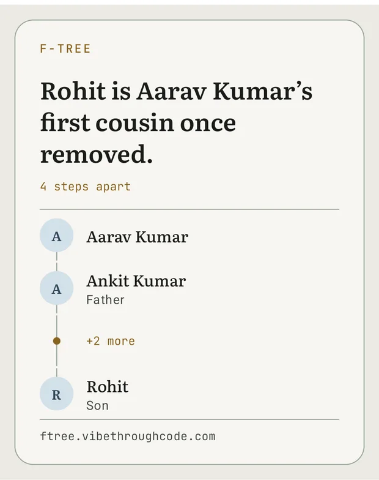
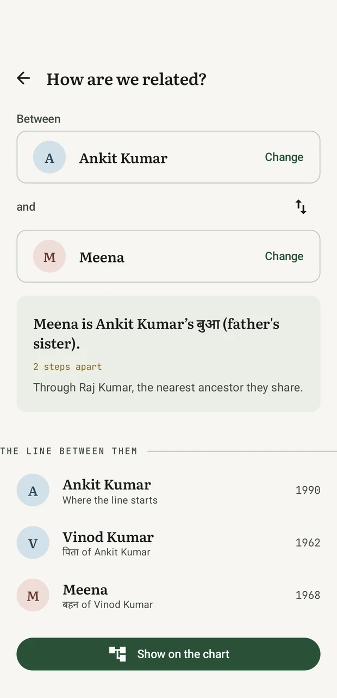
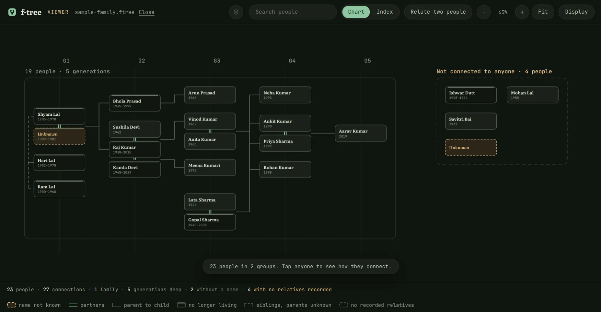
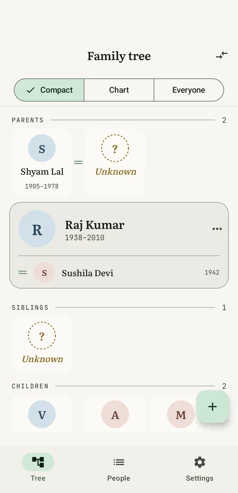

People you can't name
A person needs nothing but a place in the family — no name, no dates, no photo. Add them blank, connect everyone around them, and fill in whatever you learn later. Nothing has to be rebuilt when the name finally turns up.
For Android · Free · No account · Open source
f-tree keeps your family on your phone — every branch, every marriage, and the relatives whose names were never written down. Ask it how any two people are related and it gives you the word for it, and the line it followed to get there.
Latest release~2 MBAndroid 8.0+MIT licence
Shyam Lal's wife is in this tree. Her name isn't.
The relation finder
Somebody points across the room at a wedding, and four people start counting on their fingers. Somebody's mother is somebody's cousin, and by the third step everyone has lost it.
Pick the two of them in f-tree. It names the relationship — first cousin once removed — tells you which ancestor they share, and lists every person the line runs through, so you can see how it got there. It walks marriages as well as blood, which is how it answers my wife's mother's brother. Where English has no word for it, the line itself is the answer.
Any two peopleHowever far apartBlood or marriage
Send the answer
A family tree is not much use to the person who didn't build it. So f-tree draws the answer as a picture — the two names, the words for it, and the line between them — and sends it to a chat like any other photograph.
Which is usually when somebody asks where they sit in all of this.

Family words
Turn on Family words → हिन्दी and your mother's brother is मामा, your father's younger brother चाचा, and his wife चाची. This isn't a translation. Hindi has five words where English has "uncle", and picking the right one needs facts English throws away — which side of the family, and who was born first. f-tree only uses a word when the record earns it; where it can't tell an elder brother from a younger one, it says पिता के भाई and offers to sharpen it.
English and HindiEvery term, listed

A person needs nothing but a place in the family — no name, no dates, no photo. Add them blank, connect everyone around them, and fill in whatever you learn later. Nothing has to be rebuilt when the name finally turns up.
Second marriages, half-siblings, children across two households, adoptive, step and foster parents. f-tree stores your family as a graph, so it holds the shape a real family actually has instead of the shape a tidy diagram wants.
Compact lays the generations down the page as plain, tappable rows — nothing to pinch, and it grows with your text size. Chart draws the same family the way a family tree is drawn. Everyone shows the whole record at once, including the people no relationship reaches yet. All three stay on the same person, so switching never loses your place.
Thousands of people stay quick, because the chart only ever loads the family around whoever you're looking at. Tap anyone to recentre on them and walk the tree outward, one household at a time.
Export everything — people, connections and photos — as one .ftree
file you can copy anywhere. The format is plain JSON in a ZIP, versioned and
documented,
so it stays readable whatever happens to this app.
Sharing a tree
Send anyone your .ftree file and they can bring it into their own tree.
Nothing of theirs is replaced. f-tree finds the people who appear in both trees,
shows you the evidence for each one, and waits for you to say who is the same
person before it writes anything at all.
The defaults lean the safe way on purpose. Two records left separate that were really one person is a tidy-up you can do in seconds. Two people merged who were never the same person is not — so f-tree only merges on its own when the file states outright that both records came from the same place.
A backup of your tree is written before every import.

On a bigger screen
The app draws the family around one person, a few relationships deep, because that is what a phone can hold. Open the same export in the viewer and you get the whole archive on one canvas: every generation, every household, and every person no relationship reaches yet — the ones the app has nowhere to draw at all.
It answers the question a family actually asks out loud. Pick two people and it will tell you that one is the other's first cousin once removed, or that they are related only by a marriage four steps away, and light the path between them.
Runs in the browserNothing is uploadedNo account
On a laptop
The desktop app opens the same .ftree, and builds one from nothing if you do not
have one yet. Here a generation is a row, ancestors at the top, so the tree runs across
the width; on the phone a generation is a column, ancestors at the left. Same tree,
turned to suit the screen — a phone is taller than it is wide and a laptop is not, and
the layout follows the shape rather than the other way round.
Windows gets an installer. Ubuntu gets an AppImage or a .deb. Nothing leaves
the machine and there is no account to make, on either.
It writes to your tree as well as reading it, which this page once promised it would
not. Every save replaces your file through a temporary one and keeps the previous version as
.bak — but it is new and lightly tested, so keep a copy of anything you care
about.
Windows & UbuntuNewBuilds and reads a tree

Local first
f-tree never asks who you are, because your tree never leaves the phone. That isn't a promise in a privacy policy — it's the absence of the code that would need one. You can go and check.
The one exception is named and switched off: an optional updater that asks GitHub whether a newer release exists, so a new version installs over the old one and your family carries across. It makes no request until you turn it on in Settings, and it never sends anything — it only asks.



Get it
f-tree isn't on the Play Store, so you install the APK yourself. It takes about a minute, and the next page walks you through every prompt Android will show you — including the scary-looking ones.